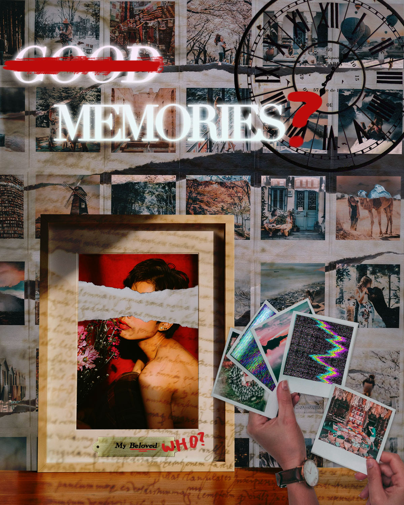

The following works are projects I created in the DIG2000 class. I learned many things on how to create Photoshop images, Premiere Pro videos, and a website with HTML.
This is my Photoshop collage I created with layers. It was my first time using Photoshop for a full assignment, where I was able to apply the skills we learned in class.

This is my Stop Motion video I created with over 150 photographs. I came up with a narrative of a cat stealing snacks, and used a cat plush and chocolates.
This is my Premiere Pro video project, a continuation of my Stop Motion project where the cat gets revenge with a friend's help.